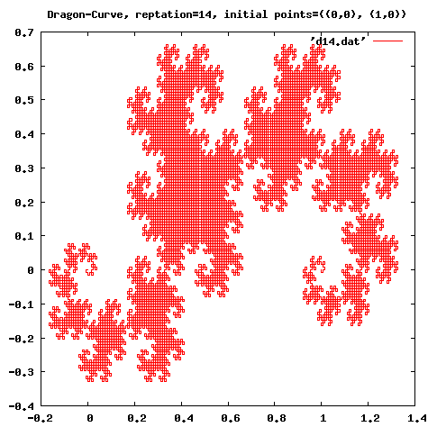

HOME
HOME Post Messages
Post Messages
|
HOME |
Post Messages |
The higher order functions promote modularity of programs. Writing higher order functions that are applicable in many cases makes program readable rather than writing recursive functions for individual cases.
For instance, using a higher order function for sort allows sorting by variety of conditions, which separates the sorting condition and the sorting procedure sharply. The function sort takes two arguments, one is a list to be sorted and the other is an ordering function. The following shows the sort of a list of integral numbers in ascending order by their size. The function < is the ordering function of two numbers.
(sort '(7883 9099 6729 2828 7754 4179 5340 2644 2958 2239) <) ⇒ (2239 2644 2828 2958 4179 5340 6729 7754 7883 9099)On the other hand, sort by the size of last two digits can be done like as follows:
(sort '(7883 9099 6729 2828 7754 4179 5340 2644 2958 2239)
(lambda (x y) (< (modulo x 100) (modulo y 100))))
⇒ (2828 6729 2239 5340 2644 7754 2958 4179 7883 9099)
As shown here, sorting procedures such as quick sort, merge sort, etc. and ordering functions are
separated completely, which promote reuse of codes.In this chapter, I will explain about pre-defined higher order functions and then about how to make your own. As Scheme does not distinguish procedures and other data structures, you can make your own higher order functions quite easily by just giving procedures as arguments.
Actually, substantial parts of pre-defined functions in Scheme is higher order functions, because Scheme does not have a syntax that defines block structure, and because lambda expression is used as a block.
(map procedure list1 list2 ...)The procedure is a symbol bound to a procedure or a lambda expression. Number of lists as arguments depend on the number of arguments of the procedure.
Example:
; Adding each item of '(1 2 3) and '(4 5 6). (map + '(1 2 3) '(4 5 6)) ⇒ (5 7 9) ; Squaring each item of '(1 2 3) (map (lambda (x) (* x x)) '(1 2 3)) ⇒ (1 4 9)
Example:
(define sum 0) (for-each (lambda (x) (set! sum (+ sum x))) '(1 2 3 4)) sum ⇒ 10
(keep-matching-items '(1 2 -3 -4 5) positive?) ⇒ (1 2 5)
(reduce + 0 '(1 2 3 4)) ⇒ 10 (reduce + 0 '(1 2)) ⇒ 3 (reduce + 0 '(1)) ⇒ 1 (reduce + 0 '()) ⇒ 0 (reduce + 0 '(foo)) ⇒ foo (reduce list '() '(1 2 3 4)) ⇒ (((1 2) 3) 4)
(sort '(3 5 1 4 -1) <) ⇒ (-1 1 3 4 5)
(apply max '(1 3 2)) ⇒ 3 (apply + 1 2 '(3 4 5)) ⇒ 15 (apply - 100 '(5 12 17)) ⇒ 66
(define (member-if proc ls) (cond ((null? ls) #f) ((proc (car ls)) ls) (else (member-if proc (cdr ls)))))
(member-if positive? '(0 -1 -2 3 5 -7)) ⇒ (3 5 -7)Further, the function member that checks if the specified item is in the list can be defined like as follows. The function takes three arguments, a function to compare, the specified item, and a list:
(define (member proc obj ls) (cond ((null? ls) #f) ((proc obj (car ls)) ls) (else (member proc obj (cdr ls)))))
(member string=? "hello" '("hi" "guys" "bye" "hello" "see you"))
⇒ ("hello" "see you")
01: ;;;;;;;;;;;;;;;;;;;;;;;;;;;;;;;;;;;;;;;;;;;;;;;;;;;;;;;;;;;;;;;;;;;;;;;;;;;;;;;;;;;;;;;; 02: ;;; 03: ;;; frac.scm 04: ;;; 05: ;;; draw fractal curves 06: ;;; by T.Shido 07: ;;; on August 20, 2005 08: ;;; 09: ;;;;;;;;;;;;;;;;;;;;;;;;;;;;;;;;;;;;;;;;;;;;;;;;;;;;;;;;;;;;;;;;;;;;;;;;;;;;;;;;;;;;;;;;; 10: 11: (define _x car) 12: (define _y cdr) 13: (define point cons) 14: 15: ;;; (rappend '(1 2 3) '(4 5 6)) -> (3 2 1 4 5 6) 16: (define (rappend ls0 ls1) 17: (let loop((ls0 ls0) (ls1 ls1)) 18: (if (null? ls0) 19: ls1 20: (loop (cdr ls0) (cons (car ls0) ls1))))) 21: 22: ;;; 23: (define (divide p1 p2 r) 24: (point (+ (* r (_x p1)) (* (- 1.0 r) (_x p2))) 25: (+ (* r (_y p1)) (* (- 1.0 r) (_y p2))))) 26: 27: ;;; print out data points to a file 28: (define (print-curve points fout) 29: (with-output-to-file fout 30: (lambda () 31: (for-each 32: (lambda (p) 33: (display (_x p)) 34: (display " ") 35: (display (_y p)) 36: (newline)) 37: points)))) 38: 39: 40: ;;; the main function to create fractal curves 41: (define (fractal proc n points fout) 42: (let loop((i 0) (points points)) 43: (if (= n i) 44: (print-curve points fout) 45: (loop 46: (1+ i) 47: (let iter ((points points) (acc '())) 48: (if (null? (cdr points)) 49: (reverse! (cons (car points) acc)) 50: (iter 51: (cdr points) 52: (rappend (proc (first points) (second points)) acc))))))) 53: 'done) 54: 55: 56: 57: ;;; c curve 58: (define (c-curve p1 p2) 59: (let ((p3 (divide p1 p2 0.5))) 60: (list 61: p1 62: (point (+ (_x p3) (- (_y p3) (_y p2))) 63: (+ (_y p3) (- (_x p2) (_x p3))))))) 64: 65: ;;; dragon curve 66: (define dragon-curve 67: (let ((n 0)) 68: (lambda (p1 p2) 69: (let ((op (if (even? n) + -)) 70: (p3 (divide p1 p2 0.5))) 71: (set! n (1+ n)) 72: (list 73: p1 74: (point (op (_x p3) (- (_y p3) (_y p2))) 75: (op (_y p3) (- (_x p2) (_x p3))))))))) 76: 77: 78: ;;; koch curve 79: (define (koch p1 p2) 80: (let ((p3 (divide p1 p2 2/3)) 81: (p4 (divide p1 p2 1/3)) 82: (p5 (divide p1 p2 0.5)) 83: (c (/ (sqrt 3) 2))) 84: (list 85: p1 86: p3 87: (point (- (_x p5) (* c (- (_y p4) (_y p3)))) 88: (+ (_y p5) (* c (- (_x p4) (_x p3))))) 89: p4)))
| line | comments |
|---|---|
| 11–13 | Points on the XY plane are represented by pairs whose car and cdr are x and y coordinates, respectively. Functions _x and _y are defined to get the coordinates. A function point is to make a point. |
| 15–20 | (rappend ls0 ls1) taking two lists as arguments, and connecting the reverse of the first list to the second list. |
| 23–25 | (divide p1 p2 r) dividing p1 and p2 internally by the ratio r. |
| 27–37 | (print-curve points fout) Outputting a list of points (points) to fout by one point par line. |
| 40–53 | (fractal proc n points fout) The higher order function that generate fractal curves. proc, n, points, and fout are a positioning function, the number of repetition, a list of initial points, a file name for output data, respectively. The function consists of a double loop named loop and iter. The loop repeats the interpolation for the data list for n times. The iter adds new points to the data list using the positioning function. In short, fractal generates curves by repeating iter for n times. The positioning function proc takes two points as arguments and returns a list of the first point and the interpolated point. |
| 57–63 | (c-curve p1 p2) The positioning function for C curves. |
| 65–75 | (dragon-curve p1 p2) The positioning function for Dragon curves. |
| 78–89 | (koch p1 p2) The positioning function for Koch curves. |
(compile-file "frac.scm") (load "frac") ;; C-Curve (fractal c-curve 14 '((0 . 0) (2 . 3)) "c14.dat") ;Value: done ;; Dragon-Curve (fractal dragon-curve 14 '((0 . 0) (1 . 0)) "d14.dat") ;Value: done ;; Koch-Curve (fractal koch 5 '((0 . 0) (1 . 0)) "k5.dat") ;Value: doneThe x and y coordinates are stored in a file named '*.dat'. You can plot it using your favorite plotting application.
Figures 1–3 are plotted using the gnuplot.


Fig. 2: A Dragon-Curve.

Fig. 3: A Koch-Curve.
Example: my-list
(define (my-list . x) x)In addition, you need the function apply.
I will explain about IO in the next chapter.
; 1 (define (double ls) (map (lambda (x) (* x 2)) ls)) ; 2 (define (sub ls1 ls2) (map - ls1 ls2))
; 1 (define (filter-even ls) (keep-matching-items ls even?)) ; 2 (define (filter-10-100 ls) (keep-matching-items ls (lambda (x) (<= 10 x 100))))
(define (sqrt-sum-sq ls) (sqrt (reduce + 0 (map (lambda (x) (* x x)) ls))))
; 1 (define (sort-sin ls) (sort ls (lambda (x y) (< (sin x) (sin y))))) ; 2 (define (sort-length ls) (sort ls (lambda (x y) (> (length x) (length y)))))
(define (sqrt-sum-sq-a ls) (sqrt (apply + (map (lambda (x) (* x x)) ls))))
; 1
(define (my-keep-matching-items ls fn)
(cond
((null? ls) '())
((fn (car ls))
(cons (car ls) (my-keep-matching-items (cdr ls) fn)))
(else
(my-keep-matching-items (cdr ls) fn))))
; 2
(define (my-map fun . lss)
(letrec ((iter (lambda (fun lss)
(if (null? lss)
'()
(cons (fun (car lss))
(iter fun (cdr lss))))))
(map-rec (lambda (fun lss)
(if (memq '() lss)
'()
(cons (apply fun (iter car lss))
(map-rec fun (iter cdr lss)))))))
(map-rec fun lss)))
(my-map + '(1 2 3) '(10 20 30) '(100 200 300)) ⇒ (111 222 333)
|
HOME |
Post Messages |